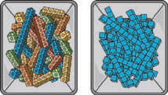

Section Summary
In this section, we used addition and subtraction to compare and to find unknown values.
We used different tools to show how to add and subtract two-digit numbers.
We learned that when you subtract 2 two-digit numbers you can think about subtracting tens from tens and ones from ones.
\(50 - 30 = 20\)
\(5 - 4 = 1\)
\(20 + 1 = 21\)